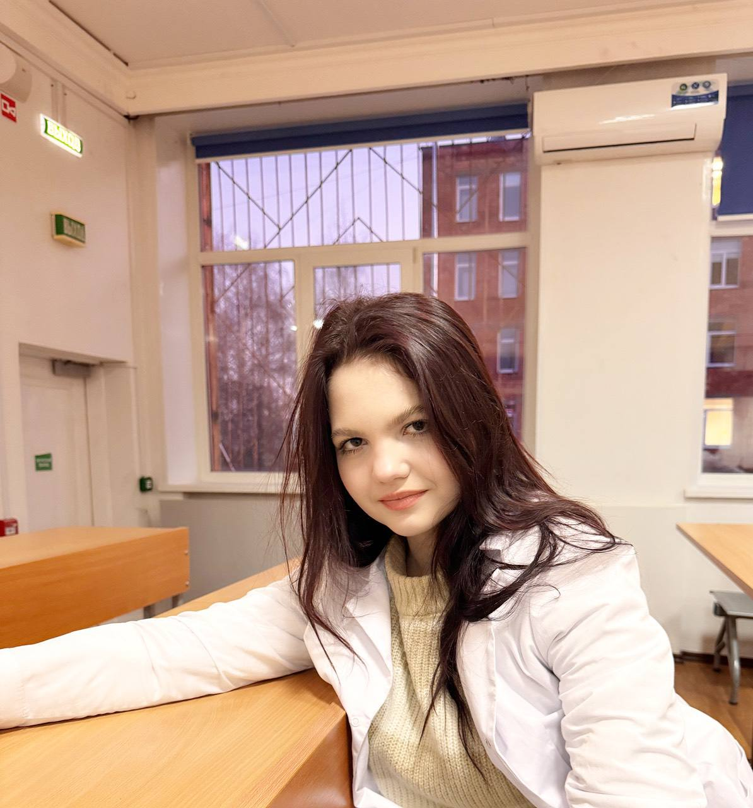
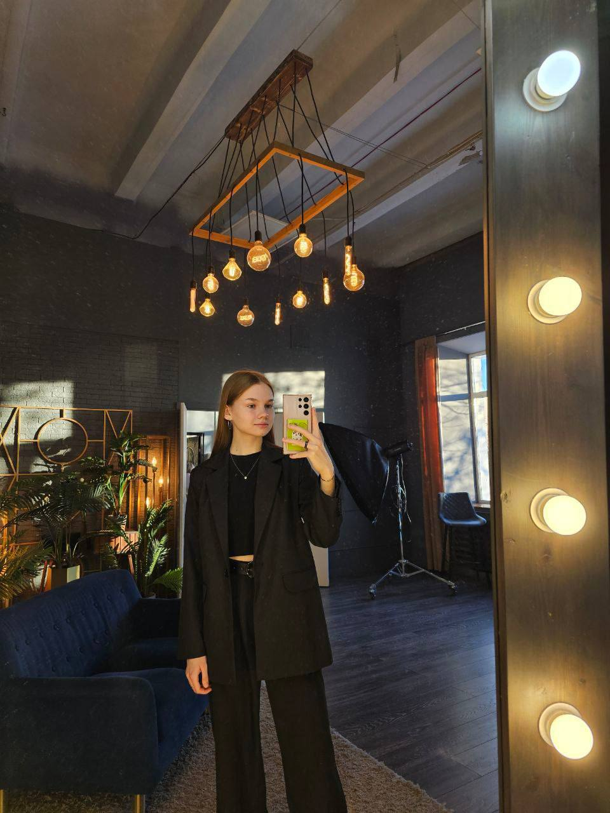

Паспорт проекта
Содержание:
Наименование проекта
Сайт для поддержания физического здоровья молодежи - "FitPro"
Презентационный сайт проекта
https://fugur.github.io/FitPro/
Команда проекта
Коробенко Дарья
Коробов Тимофей
Кондратьева Виктория
Родина Анна
Фомина Александра
1.1 Обоснование необходимости реализации проекта
Проект по поддержанию здоровья подростков и студентов крайне необходим ввиду растущей распространённости проблем со здоровьем в этой возрастной группе, негативно влияющих на успеваемость, социальную адаптацию и будущее благополучие.
Подростковый и студенческий возраст характеризуется интенсивными физическими и психологическими изменениями, повышенным уровнем стресса, неправильным питанием, недостатком сна и физической активности. И всё это может быть связанно с нехваткой времени на физическую активность и правильный образ жизни.
* Нехватка доступной и надежной информации о здоровье: Подростки часто сталкиваются с трудностями в получении достоверной и адекватной информации о физическом, психическом и эмоциональном здоровье. Сайт может стать надежным источником информации о питании, физической активности, а также о ресурсах поддержки и помощи.
* Проблемы со здоровьем, специфичные для подросткового возраста: Подростковый возраст характеризуется физиологическими изменениями, которые могут сопровождаться различными проблемами со здоровьем. Сайт может оказать поддержку в понимании этих изменений, а также в профилактике и лечении возможных проблем, таких как ожирение, нарушения сна, гормональные изменения и т.д.
* Проблемы с пищевым поведением и ментальным здоровьем: Распространенными проблемами среди подростков являются нарушения пищевого поведения (анорексия, булимия), депрессия, тревожность и другие психические расстройства. Сайт может предоставить информацию о признаках этих проблем, о том, как справиться с ними и где найти профессиональную помощь.
* Низкая физическая активность и вредные привычки: Многие подростки ведут малоподвижный образ жизни и имеют вредные привычки (курение, употребление алкоголя, наркотиков). Сайт может предложить программы по здоровому образу жизни, информацию о последствиях вредных привычек, мотивацию и рекомендации по изменению поведения.
* Пропаганда здорового образа жизни: Сайт может стать инструментом для пропаганды здорового образа жизни среди подростков, мотивировать их на заботу о собственном здоровье и формирование позитивных привычек.
* Доступность и удобство: Сайт предоставляет доступ к информации круглосуточно и с любого устройства, что важно для этой возрастной категории.
* Мотивационные трудности: Для поддержания здорового образа жизни необходима сильная мотивация. Недостаток информации о личных возможностях и мотивационных стратегиях осложняет формирование привычек и поддержание здорового образа жизни.
* Отсутствие персонализированных рекомендаций: Информация о физическом здоровье должна быть адаптирована под конкретные потребности каждого человека. Стандартные программы не всегда эффективны.
* Предоставление достоверной информации: Сайт предоставит молодежи проверенную, доступную и адаптированную под их потребности информацию о здоровом питании, физических упражнениях, спорте, профилактике заболеваний и т.д. Материал будет проверен экспертами и опираться на актуальные научные данные.
* Разработка персонализированных программ: Сайт сможет формировать индивидуальные рекомендации для поддержания физического здоровья, учитывая возраст, пол, исходный уровень физической подготовки, и другие факторы.
* Мотивация и поддержка: Сайт будет стимулировать молодежь к здоровому образу жизни через вдохновляющие истории, мотивационные материалы, онлайн-тренировки, программы поддержки и сообщества единомышленников.
* Повышение осведомленности и компетенции: Сайт обеспечит доступ к полезным инструментам для оценки своего физического состояния, планирования тренировок, подбора правильного питания и мониторинга результатов.
* Профилактика заболеваний: Сайт будет способствовать формированию и поддержанию здорового образа жизни, что значительно снизит риск развития хронических заболеваний в будущем.
* Создание активного сообщества: Сайт станет платформой для обмена опытом, мотивации и поддержки между молодежью, стремящейся к здоровому образу жизни.
Таким образом, сайт для поддержанияфизического здоровья подростков является необходимым проектом, который может помочь в решении проблем со здоровьем, обучить и мотивировать подростков заботиться о себе, а также стать важным инструментом для профилактики различных проблем и поддержки в трудные моменты.
1.2 Цель проекта
Повышение физического здоровья молодежи через предоставление информационных ресурсов и мотивации.
1.3 Целевая группа
- Подростки (14-17 лет),
-Студенты и молодежь в возрасте от 17 до 25 лет.
1.4 Рабочий план реализации проекта
| Виды деятельности |
Месяц/число/год |
Исполнитель |
| Исследование и анализ: |
28.10.2024г. |
Фомина Александра |
Проектирование:
Определение структуры сайта (разделы, функции).
Создание прототипа сайта
Разработка дизайна пользовательского интерфейса.
|
06.11.2024г. |
Коробейко Дарья |
| Поиск сотрудников для доработки сайта: |
Ноябрь 2024г. |
Родина Анна |
Тестирование:
Продвижение функционального и пользовательского тестирования.
Исправление ошибок и оптимизация работы сайта.
|
Ноябрь 2024 г. |
Коробок Тимофей |
| Запуск сайта и его продвижение: |
Декабрь 2024 г. |
Коробейко Дарья |
| Сбор отзывов пользователей: |
Декабрь 2024 г. |
Кондратьева Виктория |
| Защита проекта |
11 Декабря 2024 г. |
Коробенко Дарья
Кондратьева Виктория
Коробов Тимофей
Родина Анна
Фомина Александра
|
| Расширение функционала сайта и добавление программ |
2025 г. |
|
1.5 SWOT-анализ проекта создания сайта
| Сильные стороны |
Слабые стороны |
1. Индивидуализированный подход и персонализированные решения:
Разделение на группы по потребностям: Проект, учитывающий различные уровни стресса, проблемы со здоровьем и интересы подростков и студентов, обеспечивает более эффективное решение проблем.
Индивидуальные консультации и поддержка.
Динамическая адаптация программы: Возможность изменения подхода и методов в зависимости от потребностей участников проекта.
2. Доступность и удобство использования:
Использование современных технологий: Мобильные приложения, онлайн-платформы, социальные сети для повышения доступности информации и ресурсов.
Гибкое расписание и форматы взаимодействия: Онлайн-консультации, групповые занятия, вебинары для максимального охвата участников.
Доступность в разных регионах:
Разработка и внедрение проекта с учетом особенностей разных регионов и их инфраструктуры.
3. Укрепление социальных связей и сообщества:
Групповые мероприятия и активности: Организация групповых занятий, спортивных мероприятий, творческих мастер-классов, волонтерских проектов для создания позитивного социального окружения.
Поддержка со стороны сверстников: Использование peer-to-peer подходов, где более опытные учащиеся помогают менее опытным.
Развитие навыков коммуникации и межличностных отношений:
Программа, направленная на развитие таких важных навыков, необходимых для здоровых отношений.
4. Образование и повышение осведомленности:
- Информационные кампании:
Проект, включающий образовательные материалы (статьи, видео, инфографика), направленные на повышение осведомленности о важности здорового образа жизни и профилактики проблем со здоровьем.
- Работа с родителями и семьями:
Обучение родителей по вопросам подросткового и студенческого здоровья, налаживание эффективного взаимодействия между школами, университетами и семьями.
- Программы раннего вмешательства: Развитие навыков совладания со стрессом, укрепление эмоционального интеллекта, для раннего выявления и предотвращения проблем.
5. Фокус на позитивных изменениях:
- Развитие позитивных навыков:
Программа, включающая навыки саморегуляции, уверенности в себе, управления временем, которые помогают справляться с проблемами.
Поддержка личностного роста и развития.
Поощрение здоровых альтернатив:
Предоставление информации и возможностей для вовлечения в здоровые активности (спорт, творчество, общественная деятельность) вместо негативных привычек.
|
1. Недостаточные ресурсы и поддержка:
- Недостаточное финансирование:
Отсутствие достаточных средств может ограничить масштаб проекта, качество предоставляемых услуг и продолжительность программы.
Недостаток квалифицированных специалистов: Отсутствие необходимого количества квалифицированных психологов, социальных работников, тренеров может повлиять на качество предоставляемой помощи.
Недостаточная поддержка со стороны школ/вузов: Если проект не поддерживается администрацией учебного заведения, то его реализация может столкнуться с проблемами.
Отсутствие надлежащей инфраструктуры: Если проект требует специальных помещений, оборудования или доступа к технологиям, то отсутствие этих ресурсов может стать существенным препятствием.
2. Проблемы со стандартизацией и масштабированием:
Невозможность воспроизвести проект в других условиях: Проект, слишком специфичный или изначально рассчитанный на узкий круг участников, будет сложным в применении в других школах/вузах.
Недостаточная разработка методик и материалов: Если проект не имеет проработанных и доступных методик, материалов, или инструментов оценки, его сложно адаптировать к разным условиям.
Отсутствие системы обучения и поддержки персонала: Проблемы со стандартизацией подготовки волонтеров, или нехватка обучения штатного персонала могут сказаться на качестве проекта.
3. Социально-культурные барьеры:
Низкий уровень мотивации к здоровому образу жизни: Если у подростков и студентов недостаточно понимания важности здорового образа жизни, то проект может столкнуться с трудностями.
Социальные предрассудки и стигмы: Если проект касается деликатных проблем (например, психического здоровья), то социальные стереотипы или предрассудки могут препятствовать открытому участию.
Недостаточное понимание проблем подростков и студентов: Если разработчики проекта не учитывают специфику проблем и потребностей конкретной целевой аудитории, проект может быть неэффективным.
|
| Возможности |
Угрозы |
1. Повышение осведомленности и изменение поведения:
* Информирование о ресурсах и услугах
* Образовательные программы
* Популяризация здоровых привычек
* Развитие навыков психоэмоциональной регуляции
2. Укрепление социальных связей и сообщества:
* Создание сети поддержки: Проект может помочь подросткам и студентам найти поддержку у сверстников, педагогов, или специализированных организаций.
* Развитие групповых навыков: Групповые мероприятия и активности могут способствовать развитию социальных навыков, умению общаться и взаимодействовать в группе.
* Стимулирование волонтерства и социальной активности
* Повышение самооценки и уверенности в себе: Проект может создать возможности для подростков и студентов проявить свои таланты, получить признание и достичь успеха.
3. Улучшение доступа к ресурсам и поддержке:
* Партнерство с организациями
* Разработка мобильных приложений и онлайн-платформ: Онлайн-платформы и мобильные приложения могут обеспечить круглосуточный доступ к информации, ресурсам и поддержке, повышая удобство и эффективность.
* Индивидуальная и групповая терапия
4. Улучшение инфраструктуры и качества образования:
* Разработка и внедрение инновационных методов образования
* Улучшение взаимопонимания между учителями и учащимися: Проект может способствовать эффективному общению, взаимному уважению, и формированию здорового эмоционального климата в образовательных учреждениях.
* Поддержка педагогов
5. Возможности масштабирования и долгосрочной поддержки:
* Разработка инструментов и материалов для самостоятельного использования: Проект может создать ресурсы, которые помогут подросткам и студентам самостоятельно поддерживать свое здоровье.
* Формирование долгосрочных программ и социальных инициатив: Проект может стать основой для долгосрочных программ, направленных на профилактику и преодоление проблем подростков и студентов.
|
1. Внешние факторы и изменения в окружающей среде:
Изменение государственных приоритетов и финансирования,
Социально-политические изменения,
Изменение социальных норм и ценностей: Изменение взглядов и установок подростков и студентов, например, в отношении здорового образа жизни, могут снизить эффективность проекта.
Нехватка квалифицированных специалистов.
Рост социальных проблем:
Повышение уровня преступности, насилия, наркомании и других социальных проблем в регионе реализации проекта может негативно повлиять на здоровье участников.
2. Внутренние проблемы проекта:
Низкая вовлеченность и мотивация участников,
Недостаточная эффективность программы,
Неэффективное управление и коммуникация,
Недостаток ресурсов,
Конфликты и проблемы с сотрудничеством,
Отсутствие долгосрочной поддержки.
3. Проблемы с соблюдением этических и правовых норм:
Вопросы конфиденциальности:
Ненадлежащая защита данных участников проекта может привести к серьёзным проблемам.
Несоответствие этическим стандартам: Проект может содержать элементы, которые нарушают этические нормы, что может привести к негативным последствиям и ухудшить репутацию.
Правовые проблемы: Нарушение законодательства в процессе реализации проекта может привести к проблемам и остановке проекта.
|
1.6 Риски проекта
| Наименование риска (фактор риска) |
Вероятность возникновения |
Степень воздействия |
Профилактика (Чтобы не произошло) |
Профилактика (Если произошло) |
| Финансовые риски |
Средняя |
Высокая |
Регулярный финансовый аудит;
Диверсификация инвестиций |
План антикризисного управления;
Резервные фонды |
| Качество услуг |
Средняя |
Высокая |
Внедрение стандартов качества;
Обучение и повышение квалификации персонала |
Программа улучшения качества;
Мониторинг удовлетворенности клиентов |
| Юридические риски |
Низкая |
Высокая |
Регулярные инструктажи по безопасности;
Медицинские осмотры персонала |
Экстренная медицинская помощь;
Расследование и анализ инцидентов |
| Технологические риски |
Низкая |
Средняя |
Обновление и тестирование систем;
Защита данных и кибербезопасность |
Восстановление данных из резервных копий;
Анализ и исправление уязвимостей |
| Репутационные риски |
Низкая |
Высокая |
Прозрачность деятельности;
Работа с общественным мнением |
Антикризисная коммуникация;
Исправление ошибок и негативных отзывов |
| Изменения рынка |
Средняя |
Средняя |
Анализ и мониторинг рынка;
Гибкость и адаптация стратегии |
Быстрое перестроение бизнес-модели;
Внедрение новых продуктов и услуг |
Создание сайта для тренировок может перспективным проектом, но также связано с рядом рисков. Вот некоторые из них:
.1 Технические риски:
- Неправильный выбор технологий, что может привести к трудностям в масштабировании и поддержке.
- Проблемы с безопасностью данных пользователей, особенно если предполагается хранение личнойинформации или платежных данных.
2. Финансовые риски:
- Переоценка бюджета, что может привести к нехватке средств на быть увлекательным и завершение проекта.
- Неожиданные расходы на маркетинг или обслуживание сайта.
3. Рынковые риски:
- Неправильная оценка целевой аудитории иеё потребностей, что может привести к созданию неактуального продукта.
- Высокая конкуренция, затрудняющая привлечение пользователей.
4. Операционные риски:
- Плохое управление проектом, что может привести к задержкам и недоработкам.
- Нехватка квалифицированных кадров для разработки и поддержки сайта.
5. Юридические риски:
- Нарушение авторских прав, особенно если используются сторонние материалы без разрешения.
- Необходимость соблюдения законодательства о защите данных (например, GDPR).
6. Пользовательские риски:
- Низкий уровень вовлеченности пользователей, что может негативно сказаться на успехе сайта.
- Отрицательные отзывы и репутационные риски, если сайт не отвечает ожиданиям пользователей.
Для минимизации этих рисков важно провести тщательное планирование, исследование рынка и тестирование прототипов, а также обеспечить постоянную обратную связь с пользователями.
1.7 Партнеры проекта
Для успешного создания сайта для тренировок важно иметь надежных
партнеров, которые могут помочь в различных аспектах проекта.
Вот некоторые потенциальные партнеры:.
1 Разработчики и дизайнеры:.
- Веб-разработчики, которые создадут функционал сайта..
- UX/UI-дизайнеры для разработки удобного и привлекательного интерфейса..
2. Специалисты по контенту:.
- Копирайтеры для создания качественного текста, описывающего тренировки и услуги..
- Фотографы и видеографы для создания визуального контента (фото и видео тренировок)..
3. Маркетинговые агентства:.
- Специалисты по цифровому маркетингу для продвижения сайта и привлечения пользователей..
- SEO-эксперты для оптимизации сайта под поисковые системы..
4. Тренеры и фитнес-эксперты:.
- Профессиональные тренеры, которые смогут предоставить контент (программы тренировок, советы, видеоуроки)..
- Консультанты по питанию для создания разделов о здоровом питании и образе жизни..
5. Платежные системы:.
- Партнеры для интеграции безопасных платежных решений..
6. Поставщики технологий:.
- Платформы для хостинга сайта и обеспечения его стабильной работы..
- Поставщики программного обеспечения для управления контентом (CMS) и анализа данных..
7.Сообщества и организации:.
- Партнерство с фитнес-клубами или спортивными организациями для расширения аудитории и получения дополнительных ресурсов..
- Сотрудничество с блогерами или влиятельными личностями в области фитнеса для продвижения сайта. Наличие таких партнеров поможет обеспечить разнообразие контента, улучшить качество услуг и повысить шансы на успех проекта.
1.8 Основные исполнители проекта

Коробенко Дарья
1. Проектный менеджер:
- Ответственный за общее управление проектом, координацию работы команды и соблюдение сроков.
2. Тестировщик:
- Проводит тестирование сайта на предмет ошибок и недочетов, обеспечивает качество пользовательского опыта.
Коробов Тимофей
3. Веб-разработчик:
- Создает функционал сайта, разрабатывает серверную и клиентскую часть, обеспечивает интеграцию с другими системами.
Фомина Александра
4. Дизайнер:
- Разрабатывает визуальный стиль сайта, создает макеты и пользовательский интерфейс, обеспечивает удобство навигации.
5. Специалист по обслуживанию клиентов:
- Отвечает на вопросы пользователей, решает проблемы и собирает отзывы для улучшения сервиса.

Кондратьева Виктория
6. Контент-менеджер:
- Отвечает за создание и обновление контента на сайте, включая тексты, изображения и видео.

Родина Анна
7. SEO-специалист:
- Оптимизирует сайт для поисковых систем, проводит исследования ключевых слов и анализирует конкурентное окружение для повышения видимости.
8. Маркетолог:
- Разрабатывает и реализует стратегии продвижения сайта, проводит рекламные кампании и анализирует их эффективность.
9. Тренеры и фитнес-эксперты: фитнес-блогеры
- Предоставляют материалы и советы по тренировкам, могут создавать видео уроки или другие обучающие материалы.
Каждая из этих ролей играет важную часть в успешном завершении проекта, и их взаимодействие критически важно для достижения общей цели.
1.9 Ожидаемые результаты проекта, критерии оценки
| Для владельца/разработчика: |
Для пользователей: |
| * Привлечение и удержание аудитории: Позитивный пользовательский опыт и полезный контент помогут увлечь пользователей и превратить их в постоянных клиентов. |
* Повышение физической активности: Сайт должен мотивировать пользователей к регулярным тренировкам, предлагая удобные и разнообразные программы. |
| * Повышение узнаваемости бренда: Усилия по продвижению сайта должны привести к увеличению узнаваемости и доверия к бренду. |
* Улучшение физического и ментального здоровья: Повышение уровня физической активности, корректное питание, и мотивационные ресурсы сайта способствуют укреплению здоровья и благополучия. |
| * Доход от монетизации (при наличии): Сайт может быть монетизирован за счет платных подписок, продажи товаров для тренировок или партнерских программ.
|
* Удовлетворение потребностей в различных видах тренировок: Сайт должен предлагать широкий выбор тренировочных программ (например, кардио, силовые тренировки, йога, пилатес и т.д.), подходящих для разных уровней подготовки и целей.
|
| * Получение обратной связи и анализа потребностей пользователей: Данные о посещениях сайта, взаимодействии с контентом и отзывах позволяют улучшать сайт и предлагать новые тренировки, отвечающие потребностям целевой аудитории.
|
* Создание сообщества и мотивация: Возможность общения с другими пользователями, обмен опытом, поддержка и мотивация со стороны сообщества – важный фактор для достижения результатов.
|
| * Возможность расширения функциональности: Успешный сайт может стать основой для развития новых услуг, например, виртуальных тренировок с персональным тренером или других тренировочных программ.
|
* Доступность тренировок в любое время и место: Онлайн-формат тренировок на сайте позволяет пользователям заниматься в удобное для них время и месте. |
1.10 Дальнейшее развитие проекта
1. Создание мобильного приложения: Чтобы пользователи могли легко взаимодействовать с контентом на ходу.
2. Сообщество и форумы: Создание платформы для взаимодействия пользователей, обмена опытом и поддержки друг друга.
3. Блог и статьи: Регулярное обновление блога с полезными статьями о фитнесе, питании, мотивации и образе жизни.
4. Курс или программа: Предложение специализированных курсов
5. Магазин: Добавление интернет-магазина для продажи спортивного питания, аксессуаров и одежды.
6. Система лояльности: Внедрение программ лояльности, которые будут поощрять пользователей за активность и достижения.
7. Мультиформатный контент: Включение подкастов, вебинаров и видеороликов для разнообразия формата подачи информации.
8. Продвижение: Промоакции, отзывы, рекомендации.
Эти идеи могут помочь привлечь новую аудиторию и удержать существующих пользователей, улучшая общее качество сервиса.
1.11 Смета проекта
Расчет стоимости сайта |
| Статьи расхода |
Временные затраты, ч. |
Средняя цена, руб. |
Итоговая стоимость, руб. |
| Затраты на канцтовары |
1 |
1500 |
1500.00 |
| Разработка дизайна |
15 |
2000 |
2000.00 |
| Разработка интерфейса сайта |
20 |
5800 |
5800.00 |
| Затраты на электроэнергию |
90 |
5.65 |
513.00 |
| Хостинг сайта |
3 |
790 |
790.00 |
| Найм сотрудников |
8 |
10000 |
10000.00 |
| Юридическое обеспечение (Консультация с юристами для разработки политики конфиденциальности и условий использования) |
2 |
2500 |
2500.00 |
Контент:
(-Создание текстового контента: статьи, посты, описания; -Производство мультимедийного контента: видео, изображения, инфографика и др.) |
40 |
15000 |
15000.00 |
Интеграция с социальными сетями и платформами:
(Разработка интеграций для взаимодействия с популярными социальными сетями) |
12 |
30000 |
30000.00 |
Техническая поддержка и обновления:
( Постоянная техническая поддержка и обслуживание сайта;
Регулярные обновления безопасности и функциональности;
Резервное копирование и безопасность.) |
непрерывно |
40000 в мес. |
40000.00 в мес |
| Итоговая стоимость: |
190ч> |
|
108.103руб> |
1.12 Приложения
1. Книги:
- МакГоннигал, К. "Сила воли: Как развить и укрепить". Москва: Манн, Иванов и Фербер, 2014.
- Коэльо, Л. "Современный фитнес: Руководство по тренировкам и питанию для поддержания здоровья". ФитнесПресс, 2018.
2. Научные исследования и статьи:
- Smith, M.T., & Robinson, C. (2020). The Impact of Physical Activity on Youth Health: A Comprehensive Review. Journal of Adolescence Health.
- Иванова, Е.П., & Сидоров, В.М. (2019). Влияние регулярных физических нагрузок на здоровье подростков. Вестник современной медицины.
3. Онлайн-ресурсы:
- Всемирная организация здравоохранения (ВОЗ) – раздел, посвященный физической активности и молодежи. [URL: https://www.who.int]
- Портал "Здоровье.ру" – статьи о физических упражнениях и здоровом образе жизни. [URL: https://www.zdorovie.ru]
- Министерство здравоохранения РФ – рекомендации по поддержанию физического здоровья. [URL: https://www.rosminzdrav.ru]
- WebMD:- Сайт содержит статьи и советы, касающиеся физического здоровья, упражнений и правильного питания.
[WebMD Fitness & Exercise](https://www.webmd.com/fitness-exercise/default.htm)
YouTube-каналы:
- FitnessBlender: Канал с разнообразными тренировками для всех уровней подготовки. [FitnessBlender](https://www.youtube.com/user/FitnessBlender)
- Yoga with Adriene: Популярный ресурс для занятий йогой дома. [Yoga with Adriene](https://www.youtube.com/user/yogawithadriene)
Портал "Здоровье.ру":
- Российский интернет-ресурс с советами и статьями о физической активности и здоровом образе жизни.
- [Здоровье.ру](https://www.zdorovie.ru)
4. Журналы и периодические издания:
- Men's Health – разделы, посвященные фитнесу и здоровью молодежи.
- Shape – статьи о тренировках и питании для молодежи.
5. Видеоматериалы и онлайн-курсы:
- TED Talks: "The surprising science of motivation" – обсуждение аспектов мотивации в физической активности.
- Coursera: Курс "Exercise Prescription for the Prevention and Treatment of Disease" – материалы о влиянии физических упражнений на здоровье.
6. Фитнес-приложения и онлайн-платформы:
- MyFitnessPal: Приложение и веб-платформа для отслеживания питания и физической активности. [MyFitnessPal](https://www.myfitnesspal.com/)
- FitOn: Бесплатное приложение для тренировок с разнообразными программами для молодежи. [FitOn](https://fitonapp.com/)